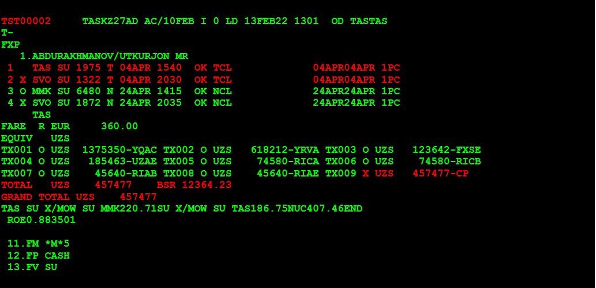

Без доплаты по тарифу и таксам, со штрафом оплаченным через таксу - CP, без оформления EMD.
1-й ШАГ. Открываем бронирование (PNR)
RT номер брони (PNR)

2-й ШАГ. Открываем запись электронного билета (по номеру строки FA)
TWD/L11

3-й ШАГ. Проверяем статус электронного билета.
Должен быть «О»

4-й ШАГ. Проверяем оплаченные таксы.
TWD/TAX

5-й ШАГ. Вызываем правила тарифа билета принятого к обмену.
FQD «откуда» «куда» /A «авиакомпания» /D «дата вылета» / R, «дата продажи» / C «класс»
FQDTASMMK/ASU/D11APR*24APR/R,10FEB22/CT
FQDTASMMK/ASU/D11APR*24APR/R,10FEB22/CN
6-й ШАГ. Читаем правила тарифа билета принятого к обмену. Так как в данном авиабилете участвуют два тарифа, нам нужно проверить условия обоих тарифа и так как авиабилет полностью не использован применить штраф тарифа у которого сумма штрафа больше.
FQN05//PE
FQN05//PE
Как видно, по правилам обоих тарифов авиакомпания разрешает производить обмен как частично использованного, так и полностью неиспользованного билета со штрафом 37 евро.
Если сумма штрафов была бы разными, тогда по польностью не использованным билетам применили бы штраф сумму которая выше. По частично использованному авиабилету приминяеться штраф по участку на которую делаеться обмен.
Если нет добора по тарифу и таксам, тогда делаем Ревалидацию авиабилета.
7-й ШАГ. Если штраф в ЕВРО. Делаем пересчет в Сумы.
FQC37EUR/UZS
Получается штраф = 457477 сум.

8-й ШАГ. Возвращаемся в бронирование.
RT

9-й ШАГ. Меняем даты вылета. Для примера на перелете туда (строка 2 и 3).
SB04APR2,3
10-й ШАГ. Сохраняем изменения.
RFUTKUR; ER
11-й ШАГ. Удаляем старую маску расчета с помощью команды:
TTE/ALL
12-й ШАГ. Создание маски TST с расчетом на дату оформления билета:
для просмотра ТАКС НОВОГО РАСЧЕТА:
FXP/ET/R,10FEB22
13-й ШАГ. Открываем запись электронного билета
TWD/L11
14-й ШАГ. Вызываем список оплаченных сборов для просмотра ТАКС СТАРОГО РАСЧЕТА:
TWD/TAX
15-й ШАГ. ДЕЛАЕМ РАСЧЕТЫ ДОПЛАТЫ ПО ТАКСАМ
Таксы НОВОГО РАСЧЕТА – таксы СТАРОГО РАСЧЕТА = в нашем случае 0 (доплаты по таксам нет)
16-й ШАГ. Т.к. у нас полностью неиспользованный билет, воспользуемся командой FXX для расчета стоимости нашего бронирования с новыми сегментами на сегодняшнюю датудля просмотра ТАРИФА НОВОГО РАСЧЕТА:
FXX/ET/R,DO–OBD
Открываем запись старого электронного билета (где 11 –номер строки FA) для просмотра ТАРИФА СТАРОГО РАСЧЕТА:
TWD/L11
Вычисляем разницу в тарифах старого билета и новым расчетом на сегодняшний день.
Тариф НОВОГО РАСЧЕТА – тариф СТАРОГО РАСЧЕТА = в нашем случае 0 (доплаты по тарифу нет)
17-й ШАГ. ДЕЛАЕМ ПОЛНЫЙ РАСЧЕТ ДОПЛАТ и берем оплату за обмен. Доплата по тарифу + доплата по таксам + ШТРАФ.
0+ 0 + 457477= 457477 сум.
18-й ШАГ.
TQT
TTI/EXCH/T2
19-й ШАГ. Если в маске билета не заполнены поля - вылет не ранее / не позднее - заполняем соблюдая правила.
TTI/T2/L1,2X/V04APR04APR/L3,4X/V24APR24APR

20-й ШАГ. Внести информацию об оплате:
Х штраф = 457477 (с кодом СР), Т итого = 457477, К1 курс = 12364.23
TTK/T2/X457477CP/T457477/K1 12364.23

21-й ШАГ. Исправляем или добавляем строку FE. Добавляя текст о внесении штрафа.
Если в брони есть FE строка чтобы добавить текст набираем номер строки где находиться FE строка например FE находиться в 13 - строке:
13//FE CHNG_FEE_SHOW_AS_TAX_CP_37EUR/457477UZS
Если в брони нет FE строки, тогда добавляем в брон FE строку. Пример:
FE CHNG_FEE_SHOW_AS_TAX_CP_37EUR/457477UZS
22-й ШАГ. Вводим номер первоначально выписанного билета по строке FA ( в нашей брони это строка 11).
FO*L11
Добавляем /P1 и нажимаем ENTER.
FO555-2490154987E1TAS10FEB22/00000000/555-2490154987E1/P1
23-й ШАГ. Исправляем форму оплаты (в нашей брони это строка 16).
RTF
16/+/CASH
Или можно удалить строку форма оплаты и заново внести. Пример:
FPO/CASH+/CASH
Важно!!! Типичная ошибка многих агентов: при обмене билета без доплаты по тарифу (общая сумма доплаты равна нулю или состоит только из добираемых такс/штрафов) – забывают изменить значение элемента FM на ноль. В результате система автоматически начисляет эту сумму комиссии еще раз, что приводит в дальнейшем к проблемам сотчетностью в BSP (в авиакомпании). В этом случае настоятельно рекомендуется изменить элемент FM на ноль, например, с помощью команды (12–номер строки FM):
12/0
24-й ШАГ. Проверяем созданную маску расчета и оформляем билет.
TQT/Т2
RF UTKUR
Если выписка на прямую в системе Амадэус.
TTP/ET/RT/T-SU/T2
Если выписка через РТС.
TWD/L11+TTP/ET/T-SU/T2
25-й ШАГ. Проверка обмена.
Просмотр записи НОВОГО электронного билета (где 11 –номер строки FA).
TWD/L11
Просмотр записи СТАРОГО электронного билета.
TWD/О*
IG